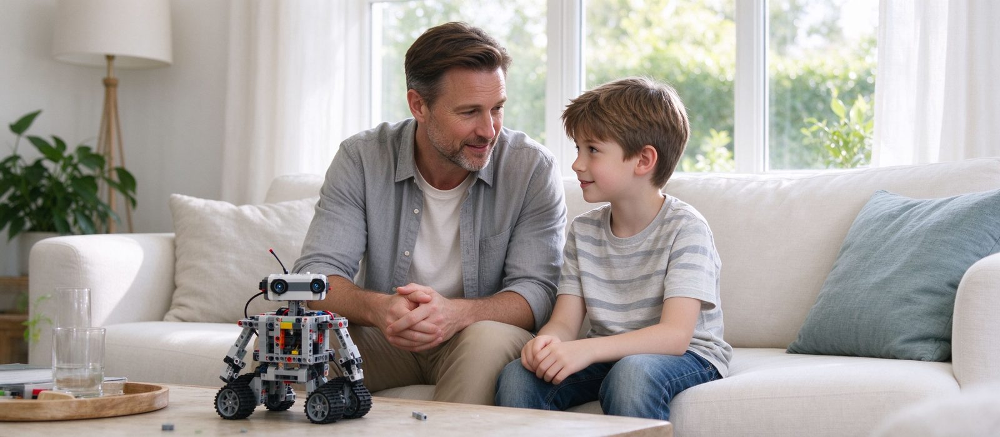

孩子说「不想学了」，先分清是哪一种不想学
「不想学了」至少有三种：任务太难、重复太多、社交不适。前两种改课就能救回来，第三种才该认真考虑停。家长最该做的不是劝，也不是马上退费，而是用三次课观察出是哪一种。

结论先行：孩子说「不想学了」，别急着劝，也别急着退费。先分清是哪一种：任务太难（每次都在失败）、重复太多（一直在做同一类东西）、社交不适（怕同伴、怕被比较、怕老师）。前两种换课型或换难度就能救回来，第三种才需要认真评估要不要停。
一、第一种：任务太难
典型表现：上课前拖延、进教室前情绪低、下课不愿讲作品；但提到机器人本身还是有兴趣，只是「不想上这个课」。
怎么判断：看他最近三次课有没有成功体验。如果连续三次都在失败、都要老师帮忙收尾，那不是懒，是难度断层。
怎么救：降一级难度，让他先完成两个「能自己搞定」的任务，把成就感补回来，再往上加。降级不是退步，是修复。
二、第二种：重复太多
典型表现：能做好、也不抗拒上课，但明显敷衍——作品越来越简单，开始用最短路径交差。
怎么判断：问「今天学了什么新东西」，如果连续几次答不上来，说明内容在原地转。
怎么救：加约束而不是加内容：同一个任务加一个传感器、限定零件数量、要求连续稳定运行三次。难度上去了，兴趣通常跟着回来。
三、第三种：社交不适
典型表现：不是不想学，是不想见某个人；回避分组、不愿展示、下课马上走；在家做得很开心，一到教室就沉默。
怎么判断：换一个时段或换一个班试两次。如果换了环境就恢复正常，问题在关系不在课程。
怎么救：先处理关系：和老师沟通分组方式，避免固定搭档；必要时调班。处理不了，再考虑停——这种情况下硬留，孩子会把「不喜欢那个人」记成「不喜欢机器人」。
四、家长最容易做错的三件事
① 用道理压：「学这个将来有用」「都交了钱了」——孩子听到的是自己的感受不重要，抵触会更强。
② 立刻退费：还没分清类型就退，等于把第一、二种（本来能救的）也一起放弃了。
③ 用奖励换坚持：「上完这期给你买玩具」短期有效，但会把学习和交易绑在一起，下一期更难。
五、三次课观察法
不用猜，用三次课做判断：
- 第一次：送他进教室，观察进门前的表情和下课后的第一句话。
- 第二次：问老师一句「他这节课卡在哪里」，看老师是否能说出具体环节。
- 第三次：在家让他讲一遍最近的课，看他讲的是过程还是只讲结果。
三次下来，基本能分出是哪一种。分出来再决定，比凭一次情绪发作下结论靠谱得多。
六、什么情况下确实该停
三种情况不必再拖：孩子持续三个月以上明确抗拒、且换了班型与老师都没有改善；课程本身已经无法提供新难度（机构只会重复同一类项目）；家庭时间与精力已经无法支撑，每次上课都是全家赶场。
也要接受一种可能：孩子就是不喜欢机械与调试。这不代表他不能学别的——Scratch 做动画、3D 建模、纯编程项目，同样能长出逻辑与工程能力，只是入口不同。
七、到校可以怎么聊
我们按水平分班，遇到孩子状态下滑会先调整任务难度而不是加压力；三年级以下 60 分钟、三年级以上 120 分钟，2–4 人小班，一周一次，器材由校区提供。校区在河西区大沽南路 459 号下瓦房晶采大厦写字楼四楼 408 室，欢迎带孩子来试一节，看他真实的状态再决定。
预约体验课